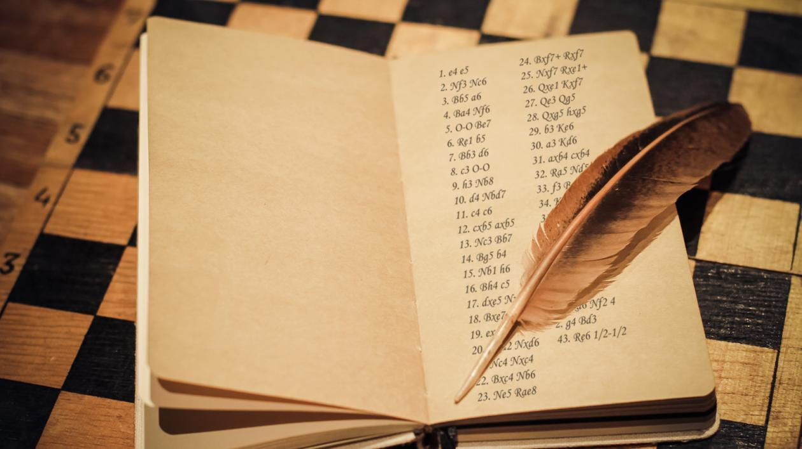
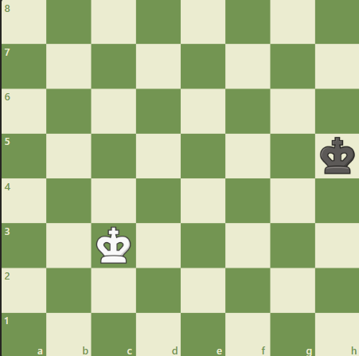
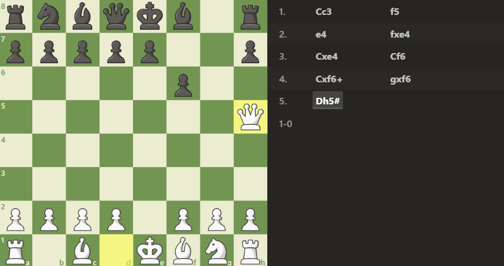
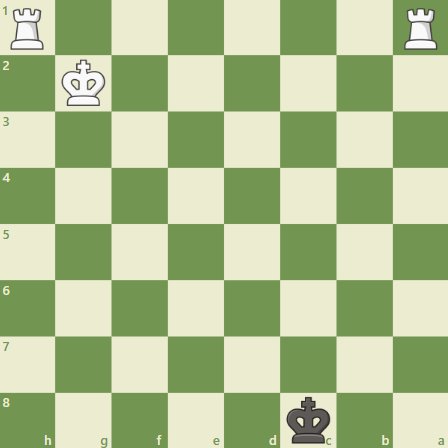

Notação de xadrez é uma forma conveniente de registrar as partidas, permitindo você revisá-las e estudar as táticas, entender os erros, ou impressionar seus amigos. Tente usar notação de xadrez na sua próxima partida. Você vai descobrir que não tem nada mais satisfatório do que um ponto de exclamação bem colocado após o lance que fez você ganhar a partida.
R: Rei
D: Dama
T: Torre
B: Bispo
C: Cavalo
P: Peão (geralmente, por convenção, a letra P é omitida na notação)

x: Captura
0-0: Roque na ala do Rei
0-0-0: Roque na ala da Dama
+: Xeque
+: Xeque

Td1 não é o suficiente para definir este lance. Qual torre andou?
Nos casos onde a notação regular for ambígua, adicione uma letra ou número para especificar a origem da peça que se move. Aqui, por exemplo, Tad1, ou Torre da coluna a até a casa d1, resolve o problema. Quando um peão faz uma captura, sempre inclua a coluna de origem, como nos exemplos fxe4 e gxf6 acima.